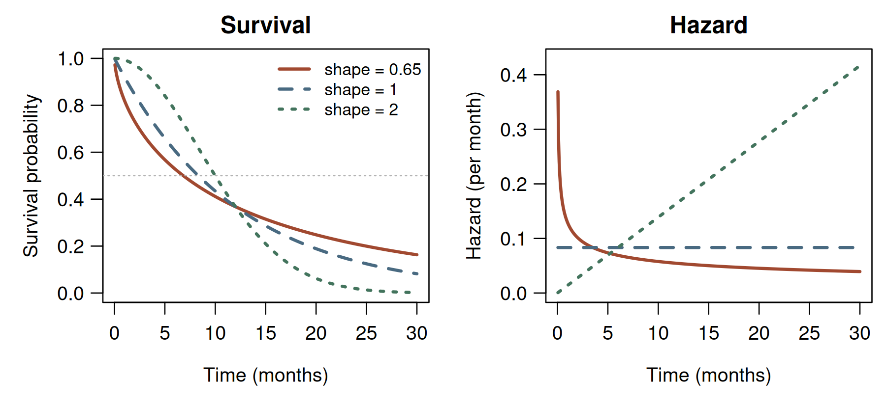
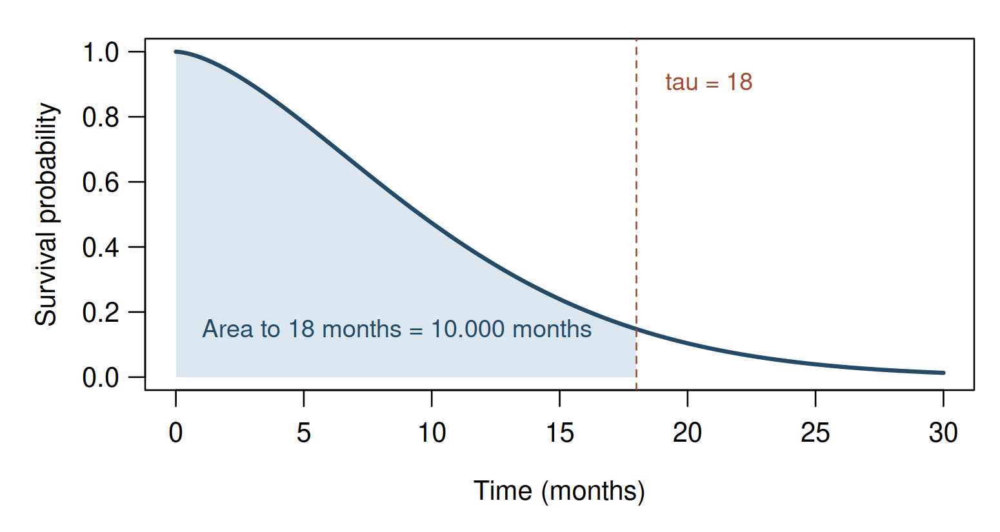

Chapter 2. Survival, risk, hazard, and lifetime summaries
2.1 Begin with the scientific question
A time-to-event study can ask several different questions about the same population. What fraction will remain free of relapse for two years? Among those still relapse-free at two years, how often will relapse occur during the next month? How much relapse-free time can a patient expect during a five-year follow-up period? These illustrative questions call for different summaries; they do not add observations to the twelve-person recurrence cohort. Treating every summary as a “risk” conceals the distinctions between an unconditional probability, a conditional rate, and an expected duration.
Chapter 1 separated the event time from its observation mechanism. Here we study the distribution of the event time itself. For the moment, imagine complete observation of every lifetime. Definitions such as survival and hazard describe a population even when its event times are partly hidden by censoring; an estimator must additionally address how those times were observed. Keeping these tasks separate will make the risk-set construction in Chapter 3 easier to understand.
Let be a nonnegative event time measured from a specified origin. We initially assume and . The first assumption excludes an event mass at the origin. The second says that everyone eventually experiences the defined event, although the mean waiting time need not be finite. We will identify where these assumptions matter.
2.2 Survival and cumulative incidence of a single event
The distribution function and survival function are (2.1) Thus is the risk of the event by time , while is the probability of remaining event-free beyond . Here there is one event type; with competing events, the probability of a particular event type requires a separate cumulative incidence function.
Survival is nonincreasing, right-continuous, and bounded between zero and one. Under our initial assumptions, and as . Right-continuity matters when events have point masses. Our convention places an event occurring exactly at in , not in . If is discrete, may therefore exceed , where denotes the left limit. Strict and weak inequalities cannot then be interchanged.
For an absolutely continuous distribution with density , (2.2) at points where the derivatives exist. A density is not the probability of an event at one instant: in this setting. Instead, for small positive at a regular point. If time is in months, density has units of inverse months. It can exceed one without violating any probability rule.
2.3 From a local conditional rate to an entire distribution
To describe the event rate among those who have reached time event-free, we condition on survival to that time. When , define (2.3) Because the interval event implies , its conditional probability is . Taking the limit gives (2.4) These equalities are statements about an absolutely continuous law, on the part of its support where survival is positive.
The hazard has units of inverse time, is nonnegative, and need not be bounded by one. A hazard of per month suggests a conditional probability close to over a sufficiently short interval of months. It does not imply an eight-percent event probability over every one-month interval: the approximation requires a short interval and little variation in the rate. The exact interval probability is derived below. A hazard comparison is also conditional on different populations having survived to the comparison time. By itself it is neither a causal effect nor an unconditional comparison of event probabilities.
Define the cumulative hazard (2.5) Integrating (2.4), and using , yields (2.6) The integral is dimensionless. It can exceed one and should not be read as a cumulative event probability; that probability is . Nonnegativity of a proposed hazard is necessary, but does not alone ensure a proper finite lifetime. For an unbounded support, we also need to make . At a finite upper endpoint, the corresponding limit is taken as that endpoint is approached.
Changing time units changes a rate’s numerical value. If is in months and is the same lifetime in years, then (2.7) The chain rule supplies the factor of 12. A constant rate of per month is therefore per year, while the probability of surviving the same physical interval is unchanged. In particular, the one-year risk is , not . We changed the number used to express the rate, not the event or the elapsed time being described. Reporting a rate without its time units prevents a meaningful interpretation. The dimensionless cumulative hazard is unchanged when evaluated at corresponding endpoints.
One useful extension allows , a “cure mass” with respect to the specified event. Then , and for an otherwise absolutely continuous lifetime distribution . The identity still describes finite-time density, whose integral is ; the tail-density formula must become . Cure is a property of a model and event definition, not something established merely by a flat observed tail.
2.4 Discrete event times require a product
Suppose events can occur only at ordered times . Write and define the discrete hazard (2.8) Now really is a probability: it has no time units and lies in . Since surviving past means surviving to and avoiding the event there, (2.9) The product starts from survival one before the first possible event. If a factor is zero, survival is zero thereafter and later conditional hazards are undefined.
For example, conditional event probabilities , , and at the first three times yield the following values.
| 1 | 0.10 | 1.00 | 0.100 | 0.900 |
| 2 | 0.20 | 0.90 | 0.180 | 0.720 |
| 3 | 0.30 | 0.72 | 0.216 | 0.504 |
The remaining probability belongs to times after ; these three hazards do not specify its later distribution.
A notation warning is essential. If cumulative hazard is defined by summing discrete hazard increments, write . Then the exact relation is the product in (2.9), not . Instead, (2.10) provided the factors are positive. Here , whereas . One may define a different cumulative quantity as ; it then has increments rather than . For small , , explaining why exponentiating a negative sum of small hazards is an approximation. This distinction anticipates the product-limit estimator and cumulative-hazard estimators.
2.5 Updating a prognosis after survival
For and , the survival function of remaining lifetime is (2.11) The numerator describes an event contained in the conditioning event; the ratio therefore follows directly from conditional probability. Under a continuous hazard model this becomes (2.12) Survival to a landmark changes the population being described. It does not reset biological age or time since treatment. Substituting for the ratio generally asserts an additional model property rather than merely changing the time origin.
2.6 Models that make the connections visible
For an exponential lifetime with rate , (2.13) The rate has units of inverse time; the mean is . Equation (2.11) gives , the memoryless property. A constant hazard is consequently a strong substantive assumption. At rate per month, the one-month conditional risk is , at every landmark time.
We use the same Weibull parameterization as base R: shape and scale , with (2.14) The scale is measured in time units, and . For this is exponential with rate . For the hazard increases; for it decreases and diverges as , while its integral near zero remains finite. A decreasing population hazard need not mean each individual becomes healthier: changing composition among survivors is one possible explanation. Weibull hazards cannot model an increase followed by a decrease.


Parameterizations must be translated before comparing software or formulas. An expression uses , not . Calling both parameters “scale” does not make their numerical values interchangeable. Writing the survival function alongside the parameter values is a reliable way to make a model specification unambiguous.
2.6.1 A rate that changes between intervals
A piecewise exponential model allows separate constant hazards over prespecified intervals. Suppose the rate is per month through month 6 and per month thereafter. The cumulative hazard is (2.15) Thus and . The hazard jumps at month 6, but survival remains continuous: a change in rate does not put positive event probability at that single time. The conditional event probability between months 4 and 8 is . Using only the hazard at month 4 across this interval would miss the later rate change. The calculation translates directly into R:
Run the complete R example
Dependencies: base R. This complete block includes the data, setup and calculations. Run it in a fresh R session. Short code excerpts above explain individual steps; this block supplies their shared setup. Figures and tables are written to a temporary directory.
Complete R example
# Complete R example. Synthetic data; no external files are required.
local({
previous.directory <- getwd()
example.directory <- tempfile("biomedical-example-")
dir.create(example.directory)
setwd(example.directory)
on.exit(setwd(previous.directory))
dir.create("generated",showWarnings=FALSE)
# survival functions and complete event times.
dir.create("figures", showWarnings = FALSE)
dir.create("results", showWarnings = FALSE)
set.seed(67502)
# Weibull convention: shape a, scale b; S(t) = exp(-(t/b)^a).
a <- 1.6
b <- 12
tau <- 18
S <- function(t) pweibull(t, shape = a, scale = b, lower.tail = FALSE)
f <- function(t) dweibull(t, shape = a, scale = b)
H <- function(t) (t / b)^a
hazard <- function(t) (a / b) * (t / b)^(a - 1)
median.theory <- b * log(2)^(1 / a)
mean.theory <- b * gamma(1 + 1 / a)
rmst.theory <- integrate(S, lower = 0, upper = tau)$value
conditional.18.given.6 <- S(18) / S(6)
# Check analytic identities away from the endpoint t = 0.
t.check <- seq(0.2, 30, length.out = 200)
eps <- 1e-4
minus.S.prime <- -(S(t.check + eps) - S(t.check - eps)) / (2 * eps)
identity.errors <- c(
density.from.survival = max(abs(f(t.check) - minus.S.prime)),
density.from.hazard = max(abs(f(t.check) - S(t.check) * hazard(t.check))),
survival.from.H = max(abs(S(t.check) - exp(-H(t.check)))),
H.from.integral = abs(H(tau) - integrate(hazard, 0, tau)$value)
)
stopifnot(all(identity.errors < 1e-6))
write.csv(data.frame(identity = names(identity.errors),
max.abs.error = unname(identity.errors)),
"results/ch02-identity-checks.csv", row.names = FALSE)
# Complete event times: no censoring or entry mechanism is simulated.
n <- 50000L
event.time <- rweibull(n, shape = a, scale = b)
restricted.time <- pmin(event.time, tau)
surv.tau <- as.numeric(event.time > tau)
estimate <- c(mean(event.time), mean(restricted.time), mean(surv.tau))
truth <- c(mean.theory, rmst.theory, S(tau))
mcse <- c(sd(event.time), sd(restricted.time), sd(surv.tau)) / sqrt(n)
simulation.summary <- data.frame(
quantity = c("mean time", "RMST", "survival at horizon"),
truth = truth, estimate = estimate, Monte.Carlo.SE = mcse,
error.in.SE.units = (estimate - truth) / mcse
)
write.csv(simulation.summary, "results/ch02-simulation.csv", row.names = FALSE)
stopifnot(all(abs(simulation.summary$error.in.SE.units) < 5))
# A discrete distribution has conditional probabilities, not density rates.
q <- c(0.10, 0.20, 0.30)
survival.after <- cumprod(1 - q)
survival.before <- c(1, head(survival.after, -1))
discrete <- data.frame(time = 1:3, q = q, mass = survival.before * q,
survival = survival.after, A = cumsum(q),
minus.log.S = -log(survival.after))
stopifnot(abs(sum(discrete$mass) + tail(survival.after, 1) - 1) < 1e-12)
write.csv(discrete, "results/ch02-discrete.csv", row.names = FALSE)
summaries <- data.frame(
quantity = c("shape", "scale", "horizon", "median", "mean", "RMST",
"Pr(T > 18 | T > 6)"),
value = c(a, b, tau, median.theory, mean.theory, rmst.theory,
conditional.18.given.6)
)
write.csv(summaries, "results/ch02-summaries.csv", row.names = FALSE)
palette <- c("#A14930", "#496A81", "#43745D")
draw.functions <- function() {
old <- par(mfrow = c(1, 2), mar = c(4.4, 4.4, 2.1, 0.6),
mgp = c(2.6, 0.8, 0), las = 1, cex = 0.95)
on.exit(par(old))
tt <- seq(0.05, 30, length.out = 500)
shapes <- c(0.65, 1, 2)
ss <- sapply(shapes, function(k) exp(-(tt / b)^k))
hh <- sapply(shapes, function(k) (k / b) * (tt / b)^(k - 1))
matplot(tt, ss, type = "l", lty = 1:3, lwd = 2.5, col = palette,
xlab = "Time (months)", ylab = "Survival probability", ylim = c(0, 1),
main = "Survival")
abline(h = 0.5, lty = 3, col = "grey70")
legend("topright", legend = paste("shape =", shapes), col = palette,
lty = 1:3, lwd = 2.5, bty = "n", cex = 0.86)
matplot(tt, hh, type = "l", lty = 1:3, lwd = 2.5, col = palette,
xlab = "Time (months)", ylab = "Hazard (per month)",
main = "Hazard", ylim = c(0, 0.43))
}
cairo_pdf("figures/ch02-weibull-functions.pdf", width = 7.2, height = 3.3,
family = "sans")
draw.functions()
invisible(dev.off())
png("figures/ch02-weibull-functions.png", width = 1800, height = 825, res = 250)
draw.functions()
invisible(dev.off())
draw.rmst <- function() {
old <- par(mar = c(4.4, 4.5, 1.2, 0.8), mgp = c(2.6, 0.8, 0), las = 1)
on.exit(par(old))
tt <- seq(0, 30, length.out = 600)
rr <- seq(0, tau, length.out = 400)
plot(tt, S(tt), type = "n", ylim = c(0, 1), xlab = "Time (months)",
ylab = "Survival probability")
polygon(c(0, rr, tau), c(0, S(rr), 0), col = "#DCE7EF", border = NA)
lines(tt, S(tt), lwd = 2.5, col = "#234B68")
abline(v = tau, lty = 2, col = "#A14930")
text(0.48 * tau, 0.15, sprintf("Area to %g months = %.3f months", tau, rmst.theory),
cex = 0.92, col = "#234B68")
text(tau + 0.5, 0.90, paste("tau =", tau), pos = 4, col = "#A14930", cex = 0.9)
}
cairo_pdf("figures/ch02-rmst.pdf", width = 6.2, height = 3.3, family = "sans")
draw.rmst()
invisible(dev.off())
png("figures/ch02-rmst.png", width = 1550, height = 825, res = 250)
draw.rmst()
invisible(dev.off())
writeLines(capture.output(sessionInfo()), "results/ch02-sessionInfo.txt")
print(summaries, row.names = FALSE)
print(simulation.summary, row.names = FALSE)
cat("\nSelected numerical results\n")
for (candidate in c("reader", "summary", "summary.mc", "perf", "comparison", "route.comparison", "test", "tab", "exact", "workflow.ci", "coef.tab", "evaluation.table")) {
if (exists(candidate, inherits=FALSE)) {
value <- get(candidate, inherits=FALSE)
if (is.data.frame(value) || is.matrix(value)) { cat(candidate, "\n"); print(utils::head(value,8)) }
}
}
cat("R", as.character(getRversion()), "\n")
})
This excerpt shows a step inside the preceding complete R example; it uses that block’s data and setup.
H.piecewise <- function(t) .05*pmin(t, 6) + .15*pmax(t-6, 0)
c(survival6 = exp(-H.piecewise(6)),
survival12 = exp(-H.piecewise(12)),
risk4to8 = -expm1(-(H.piecewise(8)-H.piecewise(4))))
# 0.7408182 0.3011942 0.3296800Here expm1(x) computes
accurately when
is near zero. The code evaluates an integrated hazard over the actual
interval; it does not substitute a rate for a probability.
This example also connects continuous rates with grouped observations. Over an interval of length with constant rate , the conditional event probability is . Therefore , and multiplying these interval survivals gives exactly . The continuous integrated hazard increment is , not . Grouping a continuous time into intervals produces conditional probabilities even when the underlying model is expressed through rates. Interval widths must be included when converting between the two.
2.7 Quantiles and expected time
For a probability , the lifetime quantile is the generalized inverse (2.16) For a continuous strictly decreasing survival curve it solves . The generalized inverse also handles jumps, where exact equality may be impossible. The median has ; an empty defining set gives an infinite population quantile. Failure of an estimated curve to reach one half instead means the median is not estimable from that curve, which is not proof of an infinite population median.
For an exponential lifetime, the median is ; for a Weibull lifetime it is . Neither generally equals the mean. To calculate expected time from a survival curve, we first write each lifetime as the area under its own indicator: . Interchanging expectation and this nonnegative integral gives (2.17) The equality permits both sides to be infinite. A proper distribution can have an infinite mean, and a positive cure mass necessarily does. For the Weibull model, put in the survival integral: (2.18) The last equality uses . Thus changing the shape changes the mean even when the scale remains fixed. The integration here uses survival, not a density missing its Jacobian; this is a useful way to check a software parameterization.
2.7.1 Restricted mean survival time
For a prespecified horizon , define restricted mean survival time (RMST) as (2.19) This is the expected event-free time accumulated within the first units after origin. A lifetime exceeding contributes , not its unknown eventual value. RMST is bounded by even when the unrestricted mean is infinite. Its units are time, and its interpretation depends on reporting the horizon. It is not , which discards the subjects who survive longer.


With censored observations, a finite horizon can make the target more closely match the supported follow-up period. Independent censoring alone does not reveal survival at arbitrarily late times: there must also be a positive chance of observation throughout the relevant interval. An RMST horizon should be scientifically meaningful and supported by follow-up. Extending a fitted parametric curve beyond the observed period is an extrapolation assumption, even if software returns a precise numerical area.
For survivors at time , mean residual lifetime is (2.20) Integrating (2.11) over remaining time proves this formula. Restricting remaining time to replaces the upper integration limit by . The exponential model has at every landmark; other models generally update this expectation after survival.
2.8 Reproducible computation with complete event times
The complete R example in this section uses base R and generates its own complete event times. We define the model first, then compare its formulas with simulation summaries. A fixed seed makes the numerical example reproducible.
This excerpt shows a step inside the preceding complete R example; it uses that block’s data and setup.
# Weibull convention: shape a, scale b; S(t) = exp(-(t/b)^a).
a <- 1.6
b <- 12
tau <- 18
S <- function(t) pweibull(t, shape = a, scale = b, lower.tail = FALSE)
f <- function(t) dweibull(t, shape = a, scale = b)
H <- function(t) (t / b)^a
hazard <- function(t) (a / b) * (t / b)^(a - 1)
median.theory <- b * log(2)^(1 / a)
mean.theory <- b * gamma(1 + 1 / a)
rmst.theory <- integrate(S, lower = 0, upper = tau)$value
conditional.18.given.6 <- S(18) / S(6)The median is approximately months. Numerical integration obtains the RMST without requiring an incomplete-gamma implementation. The complete calculation also compares with a finite-difference derivative of , checks and , and integrates the hazard. These checks catch implementation and parameterization mistakes; agreement on a grid is not a substitute for the derivations.
We next generate a new sample of 50,000 complete event times from the specified Weibull model. These are not the twelve participants whose censored records we introduced earlier. For this simulation, empirical survival at is simply the fraction exceeding , and empirical RMST is the average of .
This excerpt shows a step inside the preceding complete R example; it uses that block’s data and setup.
# Complete event times: no censoring or entry mechanism is simulated.
n <- 50000L
event.time <- rweibull(n, shape = a, scale = b)
restricted.time <- pmin(event.time, tau)
surv.tau <- as.numeric(event.time > tau)
estimate <- c(mean(event.time), mean(restricted.time), mean(surv.tau))
truth <- c(mean.theory, rmst.theory, S(tau))
mcse <- c(sd(event.time), sd(restricted.time), sd(surv.tau)) / sqrt(n)
simulation.summary <- data.frame(
quantity = c("mean time", "RMST", "survival at horizon"),
truth = truth, estimate = estimate, Monte.Carlo.SE = mcse,
error.in.SE.units = (estimate - truth) / mcse
)The recorded Monte Carlo standard errors quantify simulation noise. For the fixed seed, the simulated RMST is months, compared with its target and Monte Carlo standard error . The discrepancy is only standard errors. The simulated survival probability at month 18 is , compared with the model value . These two summaries have different units and answer different questions, despite arising from exactly the same generated lifetimes. An estimate need not equal its theoretical target exactly, even when the code is correct. These calculations rely on observing complete event times. Replacing by a censored follow-up time would generally underestimate survival time; Chapter 3 develops the necessary adjustment.
2.9 Exercises
Recover the event distribution. For an absolutely continuous event time on with no mass at zero, let . Derive , and , prove that the density integrates to one, and obtain the median. If is in years, state the units of the hazard and of its coefficient .
Discrete conditional probabilities. A discrete event time has conditional event probabilities , and at times 1, 2 and 3, conditional on not failing earlier. Calculate the three event masses, survival just after each time and . No condition is imposed on the remaining tail beyond time 3. Compare the exact with and explain why the continuous-hazard identity cannot be applied to this sum.
Conditioning on survival. Let for , with time in years. Compute and compare it with . Explain the difference using the integrated hazard over the two three-year intervals.
Restricted mean and conditional mean. For any nonnegative lifetime and finite horizon , prove from an indicator integral. For with , derive this restricted mean and . Compare them at and , and take the restricted-mean limit as .
Mass beyond finite event times. On the extended nonnegative lifetime space, suppose for finite . Find its finite-time density, hazard and limiting cumulative hazard. Find the median and restricted mean through time 10. Explain why the unrestricted mean is infinite even though these two summaries are finite.